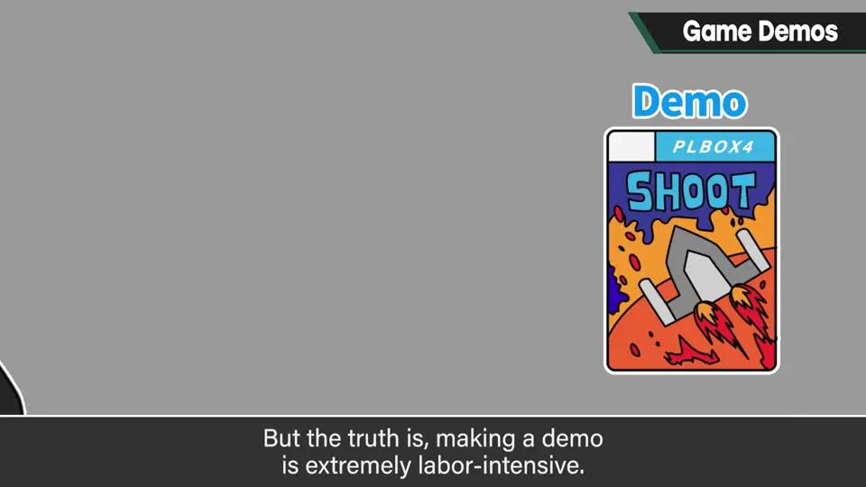
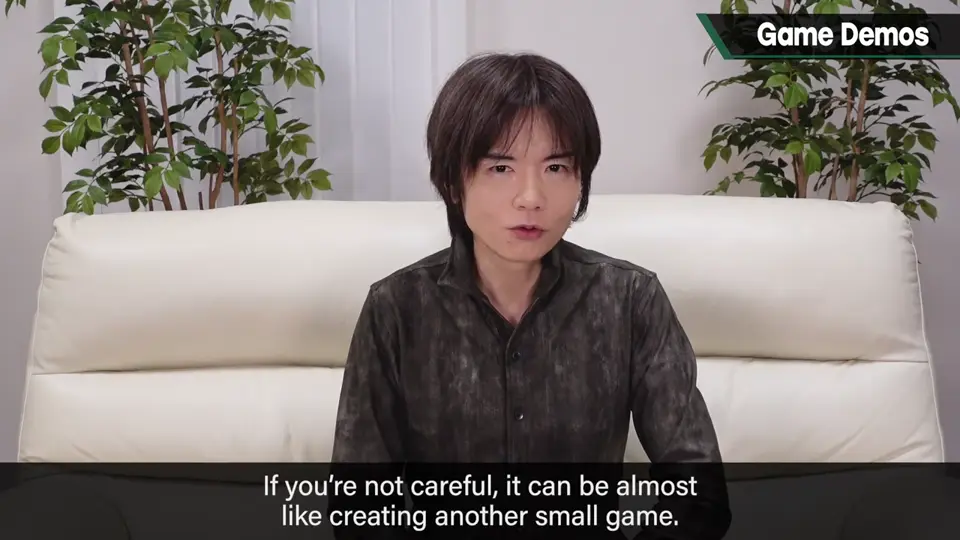
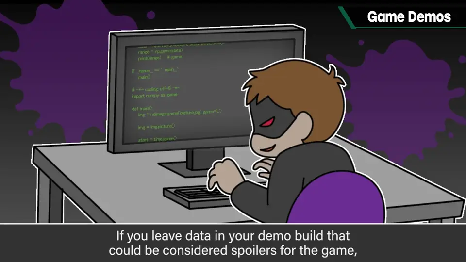
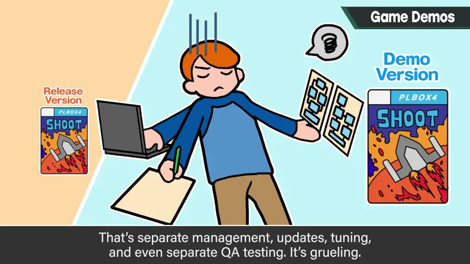
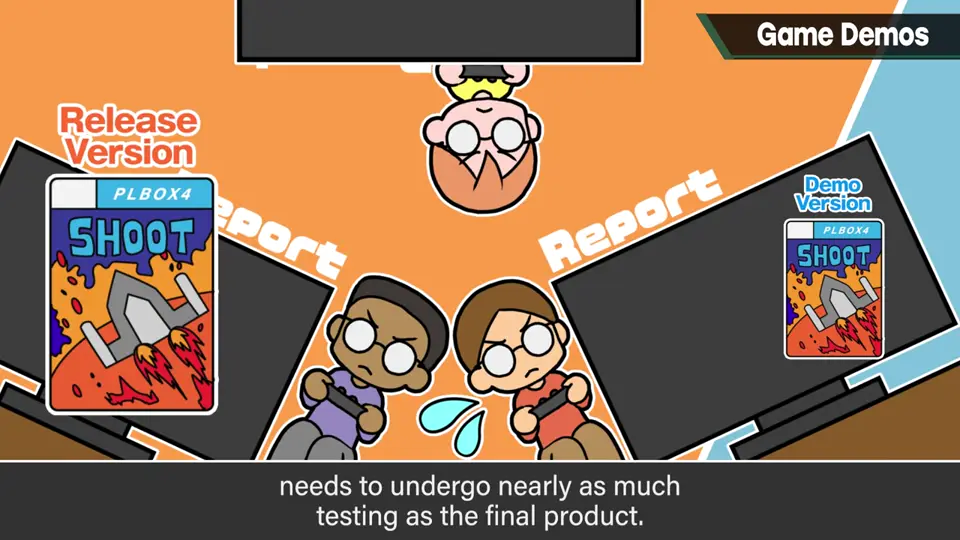
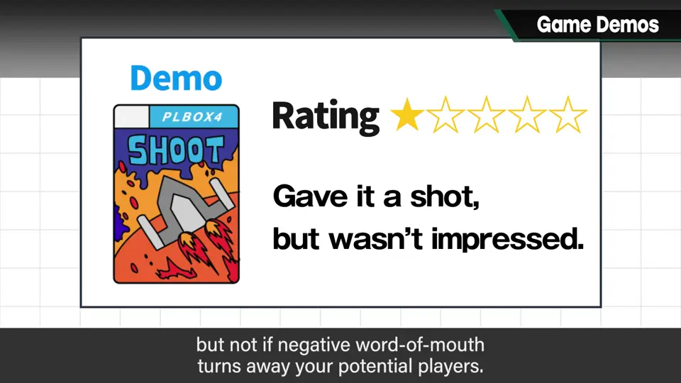
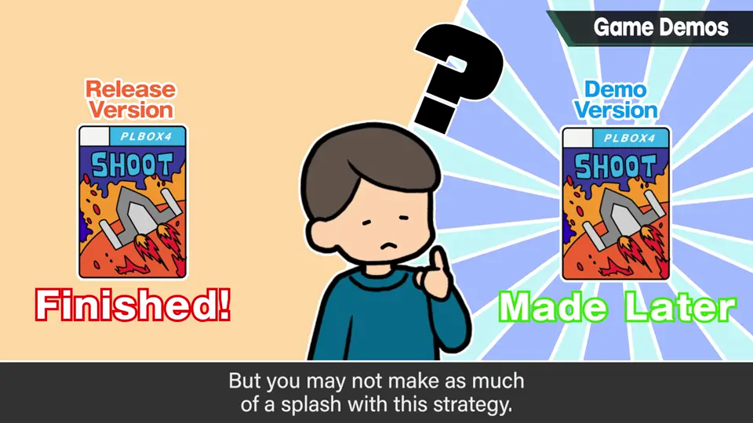
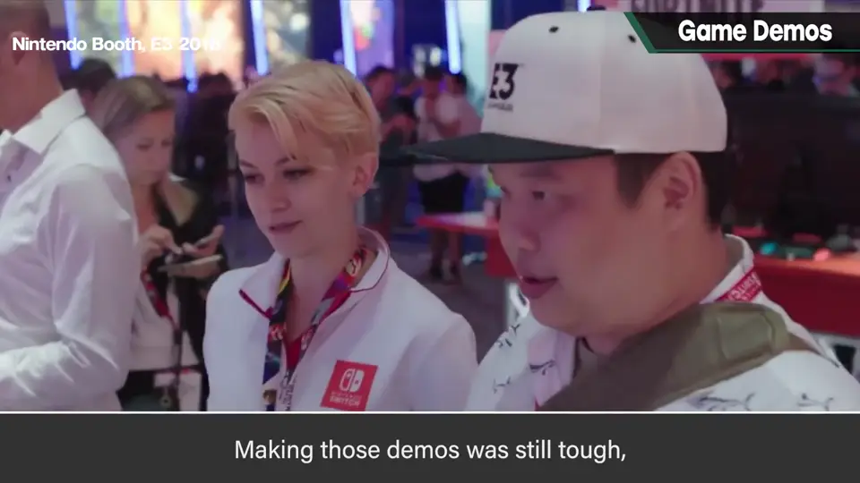
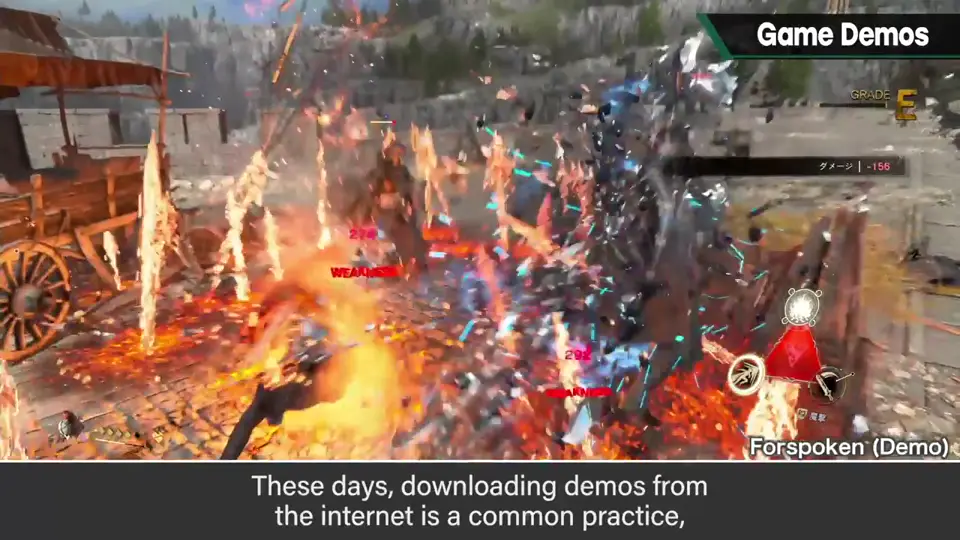

速览
作为游戏的试玩，制作体验版一般相当有效：世上大多数东西都不被知道，与其不被知道，应努力被知道；无论制作方觉得传达了多少，对大众来说常常还远远不够，体验版的有效度很高。顾客可能会想「那为什么不多做体验版」，但做体验版的劳力远超一般想象：绝不是切出游戏前半段就行，弄不好和做一款小软件一样辛苦。首先，发售前推出的体验版必须防备信息泄露风险：如果体验版数据里残留相当于产品剧透的东西，被解析就惨了，所以要仔细剔除；按文件剔除还好，要完全把握哪个文件里写了什么再剔除很难。其次，从做体验版的瞬间起，开发内就要管理两个版本：管理分开，更新、调整、调试也都分开，很辛苦；毕竟要对外发布，必须做接近产品版的调试；而且因为泄露风险剔除了一些要素，出 bug 的可能性也高。再者，体验版的平衡可能还没调好，推出半成品被看扁的可能当然也增加——有总比没有明显好，但恶评蔓延打消别人的兴趣就麻烦了；如果希望和产品版同等的平衡，只能在正篇发售后过一阵再出体验版，这效果又很微妙。所以体验版会挤压本来就紧张的开发资源，非常严苛；像完成后削减要素那样做更轻松，但效果会下降。新冠之前，游戏相关展会在全球很盛行，展出了各种体验版，做起来也很辛苦，但不会留在用户手里、可以管理，也许还算好。如今在线下载体验版已成日常，所以体验版的制作可以说是有效的。游戏巨大化、复杂化，体验版制作更加严苛；做不做取决于发行商和开发商的方针，但体验版非常有效，「被知道比不被知道好」是真的。
1. 体验版很有效 0:03
作为游戏试玩，制作体验版一般相当有效。世上大部分东西都不为人知，与其不被知道，应该努力被知道。
无论制作方觉得传达了多少，对大众来说常常还远远不够，所以体验版的有效度很高。

2. 远比想象费力 0:30
顾客也许会想「那为什么不多做点体验版」。但做体验版要花的劳力，远远超出一般的想象。

3. 防泄露 0:58
首先，发售前推出的体验版必须防备信息泄露风险：如果体验版数据中残留相当于产品剧透的东西，被解析就惨了，所以要仔细剔除。

按文件剔除还好，但要完全把握哪个文件里写了什么再剔除，很难。
4. 两个版本 1:24
从做体验版的那一刻起，开发内部就要管理两个版本：管理分开，更新、调整、调试也全都分开——很辛苦。


毕竟要对外发布，必须做接近产品版程度的调试。而且因为泄露风险剔除了游戏内的一些要素，出 bug 的可能性也高。
5. 平衡与时机 1:53
体验版也可能还没完成平衡调整。推出半成品，被看扁的可能当然也会增加。
有总比没有明显好；但恶评蔓延、打消别人的兴趣就麻烦了。


如果希望和产品版同等的平衡调整，只能在正篇发售后过一阵再出体验版——这样效果又很微妙。
6. 展会与下载 2:39
新冠之前，游戏展会在全球很盛行，展出各种体验版。做起来也很辛苦，但不会留在用户手里、可以管理，也许还算好些。


如今在线下载体验版已成日常，所以制作体验版可以说是有效的。
游戏巨大化、复杂化，体验版的制作更加严苛。做不做取决于发行商和开发商的方针。
自测题
1. 为什么做体验版不只是「切一段游戏」？
要防剧透数据泄露、管理两个版本并分别更新调试、剔除要素易出 bug，工作量可能相当于一款小游戏。 0:44
2. 体验版平衡的两难是什么？
发售前推出可能平衡未调好被看扁；要同等平衡就只能发售后推出，效果又微妙。 1:53
3. 樱井对体验版的结论是什么？
非常有效，被知道比不被知道好；做不做取决于厂商方针。 3:20